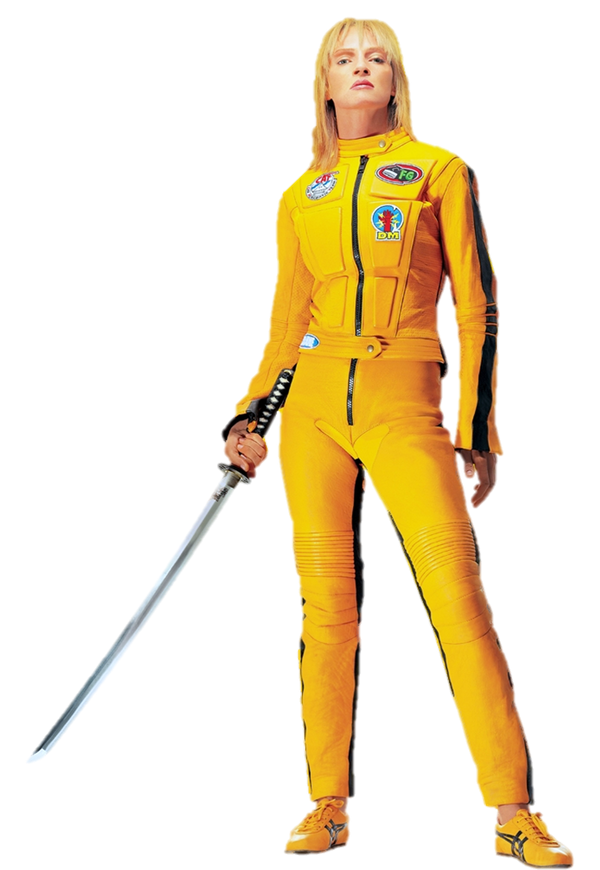
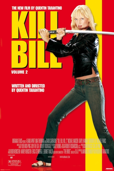
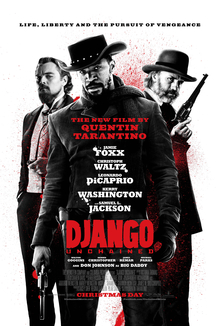
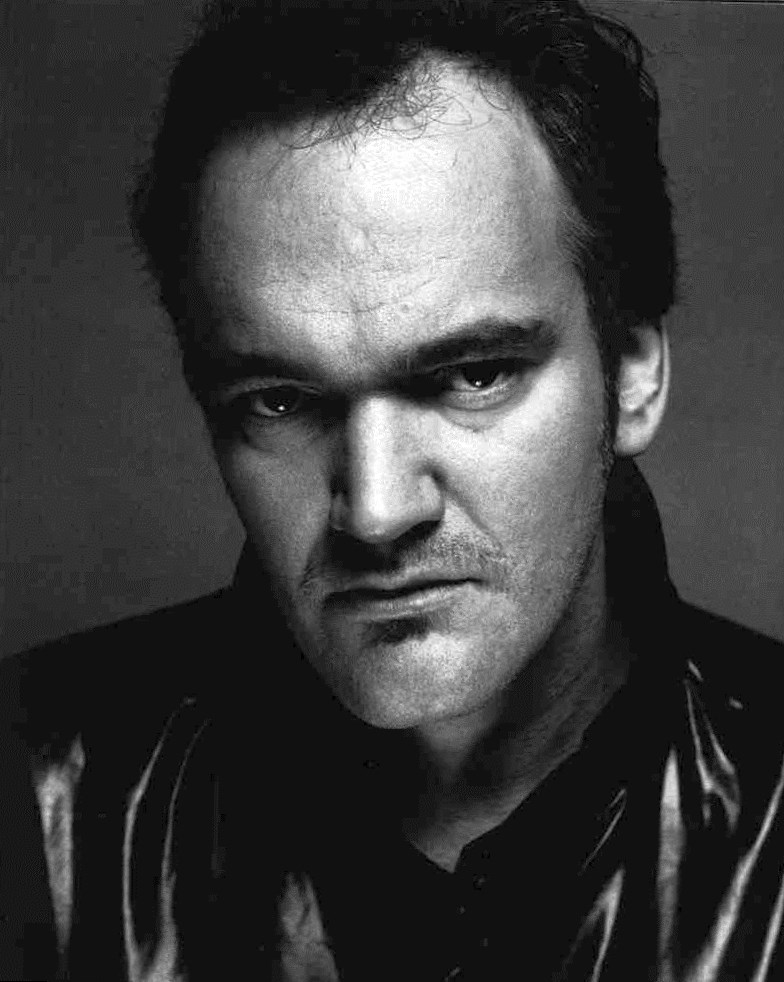

the 4th film by quentin tarantino
kill
bill

uma thurman • lucy liu
david carradine • daryl hannah
michael madsen • sonny chiba • chiaki kuriyama
Movies List
 Eight men eat breakfast at a Los Angeles diner.
Eight men eat breakfast at a Los Angeles diner.
Except for leader Joe Cabot and his son Nice Guy Eddie, all of the other men use aliases: Mr. Brown, White, Blonde, Blue, Orange, and Pink. After discussing the Madonna song "Like a Virgin" and arguing over Pink's habit of not tipping, the group leaves the diner to execute a diamond heist.
After the heist, White flees with Orange, who was shot in the stomach by an armed woman while hijacking her car, and is bleeding severely. At one of Joe's warehouses, White and Orange rendezvous with Pink, who believes that the job was a setup, and that the police were waiting for them.
White informs him that Brown is dead, Blue and Blonde are missing, and Blonde murdered several innocent civilians during the heist; White is furious that Joe, his old friend, would employ a "psychopath" like Blonde.
Having hidden the diamonds nearby, Pink argues with White over getting medical attention for Orange, and the pair end up arguing and draw guns at each other. They yield when Blonde arrives with a kidnapped policeman named Marvin Nash.
Sometime earlier, Blonde meets with the Cabots, having completed a four-year jail sentence. To reward him for concealing Joe's name from the authorities, they offer him a no-show job. Blonde insists on returning to "real work", and they hire him for the heist.
In the present, White and Pink beat Nash for information. Eddie arrives and orders them to retrieve the stashed diamonds and ditch the getaway vehicles, leaving Blonde to handle Nash and Orange. Whilst dancing to Stealers Wheel's "Stuck in the Middle with You", Blonde tortures Nash, slashing his face and cutting off his right ear with a straight razor.
Blonde then retrieves a gasoline can from his car and douses Nash with gasoline, but before he can ignite it and set Nash ablaze, Orange suddenly awakens and shoots Blonde to death, afterwards assuring Nash that he is an undercover police officer and the police will arrive shortly.
Earlier, Orange fabricates an elaborate tale of drug delivery to gain acceptance into the gang. Shortly thereafter, White befriends Orange. Back in the present, Eddie, Pink, and White return to the warehouse where Orange tries to convince them that Blonde planned to kill them all and steal the diamonds for himself.
Eddie impulsively kills Nash and accuses Orange of lying, as Blonde was a longtime friend of his father. Joe then arrives and announces the police have killed Blue. Before Joe can execute Orange, whom he suspects is the traitor, White intervenes and holds him at gunpoint, insisting that he doubts Orange is responsible. Eddie promptly aims at White, creating a Mexican standoff. All three fire; both Joe and Eddie are killed, and White and Orange are hit.
Pink, the only uninjured person, takes the diamonds and flees. As White cradles the dying Orange in his arms, Orange confesses that he is an undercover officer; White, upset at the betrayal, reluctantly presses his gun to Orange's head. In the background, Pink is heard attempting to escape as the police storm the warehouse and order White to drop his gun. White shoots Orange and collapses as gunfire erupts.
_poster.jpg) Hitmen Jules Winnfield and Vincent Vega arrive at an apartment to retrieve a briefcase for their boss, gangster Marsellus Wallace, from a business partner, Brett. After Vincent checks the contents of the briefcase, Jules shoots one of Brett's associates. He declaims a passage from the Bible, and he and Vincent kill Brett for trying to double-cross Marsellus.
Hitmen Jules Winnfield and Vincent Vega arrive at an apartment to retrieve a briefcase for their boss, gangster Marsellus Wallace, from a business partner, Brett. After Vincent checks the contents of the briefcase, Jules shoots one of Brett's associates. He declaims a passage from the Bible, and he and Vincent kill Brett for trying to double-cross Marsellus.
They take the briefcase to Marsellus and wait while he bribes boxer Butch Coolidge to take a dive in his upcoming match.
The next day, Vincent purchases heroin from his drug dealer, Lance. He shoots up and drives to meet Marsellus's wife Mia, having agreed to escort her while Marsellus is out of town. They eat at Jack Rabbit Slim's, a 1950s-themed restaurant, and participate in a twist contest, then return home.
While Vincent is in the bathroom, Mia finds his heroin and snorts it, mistaking it for cocaine. She suffers an overdose; Vincent rushes her to Lance's house, where they revive her with an injection of adrenaline into her heart. Vincent drops Mia off at her home, and the two agree never to tell Marsellus about the incident. Butch bets the bribe money on himself and double-crosses Marsellus, winning the bout but accidentally killing his opponent as well.
Knowing that Marsellus will send hitmen after him, he prepares to flee with his girlfriend Fabienne, but discovers she has forgotten to pack a gold watch passed down to him through his family. Returning to his apartment to retrieve it, he notices a submachine gun on the kitchen counter and hears the toilet flush. When Vincent exits the bathroom, Butch shoots him dead and departs.
When Marsellus spots Butch stopped at a traffic light, Butch rams his car into him, leaving both of them injured and dazed. Once Marsellus regains consciousness, he draws a gun and shoots at Butch, chasing him into a pawnshop. As Butch gains the upper hand and is about to shoot Marsellus, Maynard the shop owner captures them at gunpoint and binds and gags them in the basement.
Maynard and his accomplice Zed take Marsellus into another room and begin to rape him, leaving the "gimp" - a silent figure in a bondage suit - to watch over Butch. Butch breaks loose and knocks the gimp unconscious. Instead of fleeing, he decides to save Marsellus, and arms himself with a katana from the pawnshop. He kills Maynard and frees Marsellus, who shoots Zed in the crotch with Maynard's shotgun. Marsellus informs Butch that they are even, and to tell no one about the rape and to depart Los Angeles forever. Butch picks up Fabienne on Zed's chopper, and they drive away.
Earlier, after Vincent and Jules have killed Brett in his apartment, another man bursts out of the bathroom and shoots at them, but misses with every bullet; after briefly checking themselves for wounds, Jules and Vincent shoot him dead. While driving away with Brett's associate Marvin, Jules professes that their survival was a miracle, which Vincent disputes. Vincent accidentally shoots Marvin in the face, killing him, and covering Vincent, Jules, and the car interior in blood in broad daylight.
They hide the car at the home of Jules's friend Jimmie, who demands they deal with the problem before his wife Bonnie comes home. Marsellus sends a cleaner, Winston Wolfe, who directs Jules and Vincent to clean the car, hide the body in the trunk, dispose of their bloody clothes, and take the car to a junkyard.
At a diner, Jules tells Vincent that he plans to retire from his life of crime, convinced that their "miraculous" survival at the apartment was a sign of divine intervention. While Vincent is in the bathroom, a couple, "Pumpkin" and "Honey Bunny" hold up the restaurant and demand Marsellus's briefcase. Distracting him with its contents, Jules overpowers Pumpkin and holds him at gunpoint;
Honey Bunny becomes hysterical and points her gun on him. Vincent returns with his gun aimed at her, but Jules defuses the situation. He recites the biblical passage, expresses ambivalence about his life of crime, and allows the robbers to take his cash and leave. Jules and Vincent leave the diner with the briefcase in hand.
.png) Jackie Brown, a flight attendant, smuggles money from Mexico into the United States for Ordell Robbie, a gun runner in Los Angeles. When his courier, Beaumont Livingston, is arrested, Robbie bails him out with bail bondsman Max Cherry, then executes Livingston later that evening, fearing that Livingston would turn informant.
Jackie Brown, a flight attendant, smuggles money from Mexico into the United States for Ordell Robbie, a gun runner in Los Angeles. When his courier, Beaumont Livingston, is arrested, Robbie bails him out with bail bondsman Max Cherry, then executes Livingston later that evening, fearing that Livingston would turn informant.
Acting on information Livingston gave them, ATF agent Ray Nicolette and LAPD detective Mark Dargus intercept Brown with Robbie's cash and a bag of cocaine, which she is unaware was intended for Melanie Ralston. She is sent to jail, which alerts Robbie. Having been paid by Robbie, Cherry bails out Brown.
Robbie arrives at Brown's apartment shortly thereafter to kill her, and after she pulls a gun on him, it is revealed she stole a gun from Cherry's glovebox. She negotiates a deal with Robbie whereby she pretends to help the authorities while smuggling in $550,000 of his money.
Robbie brings in Louis Gara, a criminal associate and former cellmate, just released from prison. Meanwhile, Melanie Ralston, Robbie's surfer-girl, attempts to convince Gara to betray Robbie and take the money for themselves. Gara informs Robbie about this but Robbie replies that he is not concerned about her.
Unaware of the plan to smuggle in $550,000, Nicolette and Dargus devise a sting to catch Robbie during a transfer of $50,000. Unbeknownst to all, Brown plans to keep the $500,000 for herself. She recruits Cherry, offering him a cut.
During a test run, Brown smuggles in $10,000, with Nicolette and Dargus aware, to swap with Sheronda at a shopping mall. After Brown leaves, Cherry observes an unknown woman swap bags with Sheronda. He informs Brown and she confronts Robbie, who states he used Simone Hawkins to secure his money as backup.
On the day of the transfer, Robbie discovers Simone has left town with the $10,000 and reluctantly recruits Melanie to perform the swap, with Gara taking her to the mall. Brown enters a dressing room in a department store to try on a suit. She has told Robbie she will swap bags there with Melanie, under the nose of Nicolette, who thinks the exchange will take place in the food court.
Instead, the bag she gives Melanie contains only $40,000, and she leaves the rest in the dressing room for Cherry. Brown takes $10,000 she separated before entering the mall and places it on top of the bag she gives Ralston as a bonus. Brown then runs frantically to the food court and yells out to Nicolette, claiming Melanie burst into the dressing room and stole the money.
In the parking lot, Melanie taunts Gara about forgetting where they parked. He loses his temper and shoots her, confessing this to Robbie upon meeting him. Robbie becomes livid when discovering most of the money is missing and realizes Brown is the culprit. Robbie kills Gara and leaves with the money. Robbie turns his anger towards Cherry, whom he now knows helped Brown. Robbie tells Cherry to tell Brown that Robbie will kill them if he doesn't get his money back, and if Brown goes to the cops he will name her as an accessory.
Cherry goes to Robbie's house and tells him that Brown, frightened, is waiting in Cherry's office with the money for him. Robbie holds Cherry at gunpoint as they enter his office. Brown yells out to Nicolette that Robbie has a gun. Nicolette jumps out (with Dargus, and Winston as backup) and kills Robbie.
The charges against Brown are dropped. She plans a trip to Madrid. Cherry declines Brown's invitation to join her, they kiss goodbye, and she leaves as he watches her drive away.
 A woman in a wedding dress, the Bride (Thurman), lies wounded in a chapel in El Paso, Texas, having been attacked by the Deadly Viper Assassination Squad. She tells their leader, Bill (David Carradine), that she is pregnant with his baby just before he shoots her in the head.
A woman in a wedding dress, the Bride (Thurman), lies wounded in a chapel in El Paso, Texas, having been attacked by the Deadly Viper Assassination Squad. She tells their leader, Bill (David Carradine), that she is pregnant with his baby just before he shoots her in the head.
Four years later, having survived the attack, the Bride goes to the home of Vernita Green (Vivica A. Fox), planning to kill her. Both women were members of the Deadly Vipers, which has since disbanded; Vernita now leads a normal suburban family life. They engage in a knife fight which is interrupted when Vernita's young daughter Nikki arrives. The Bride agrees to meet Vernita at night to settle the matter, but when Vernita tries to shoot the Bride with a pistol hidden in a box of cereal, the Bride throws a knife into Vernita's chest, killing her. Nikki witnesses the killing, and the Bride offers her a chance to avenge her mother's death when she grows up, should she choose to do so.
Four years earlier, police investigate the massacre at the wedding chapel. The sheriff discovers that the Bride is alive but comatose. In the hospital, Deadly Viper Elle Driver (Daryl Hannah) prepares to assassinate the Bride via lethal injection, but Bill aborts the mission at the last moment, considering it dishonorable to kill the defenseless Bride.
Awakening from her four-year coma, the Bride is horrified to find that she is no longer pregnant. She kills a man who tries to rape her and a hospital worker who has been selling her body while she was comatose. She takes the hospital worker's truck and teaches herself to walk again.
Resolving to kill Bill and the other Deadly Vipers, the Bride picks her first target: O-Ren Ishii (Lucy Liu), now the leader of the Tokyo yakuza. After witnessing the yakuza murder her parents when she was a child, O-Ren took vengeance on the yakuza boss and replaced him after training as an elite assassin. The Bride travels to Okinawa, Japan, to obtain a sword from legendary swordsmith Hattori Hanzō (Sonny Chiba), who has sworn never to forge a sword again. After learning that her target is Bill, his former student, he relents and crafts his finest sword for her, taking a month to finish the job.
The Bride tracks O-Ren to the House of Blue Leaves, a Tokyo restaurant, and amputates the arm of her assistant, Sofie Fatale (Julie Dreyfus). She defeats the Crazy 88, O-Ren's squad of elite fighters, and kills her bodyguard, schoolgirl Gogo Yubari (Chiaki Kuriyama). O-Ren and the Bride duel in the restaurant's Japanese garden; the Bride gains the upper hand and kills O-Ren by slicing off the top of her head. After torturing Sofie for information about Bill and the other Deadly Vipers, the Bride leaves her alive as a threat. Bill finds Sofie and asks her if the Bride knows that her daughter is alive.

The pregnant Bride and her groom rehearse their wedding. Bill − the Bride's former lover, the father of her child, and the leader of the Deadly Viper Assassination Squad − arrives unexpectedly and orders the Deadly Vipers to kill everyone at the wedding. Bill shoots the Bride in the head, but she survives and swears revenge.
Four years later, the Bride, having already assassinated Deadly Vipers O-Ren Ishii and Vernita Green, goes to the trailer of Bill's brother and Deadly Viper Budd (Michael Madsen), planning to ambush him. Having been warned by Bill beforehand, he incapacitates her with a non-lethal shotgun blast of rock salt and sedates her. He calls Elle Driver (Daryl Hannah), another former Deadly Viper, and arranges to sell her the Bride's unique sword for $1 million. He seals the Bride inside a coffin and buries her alive.
Years earlier, Bill tells the young Bride of the legendary martial arts master Pai Mei (Gordon Liu) and his Five Point Palm Exploding Heart Technique, a death blow that Pai refuses to teach his students; properly used, the attack is reputed to leave an opponent able to take only five steps before dying. Bill takes the Bride to Pai's temple for training. Pai ridicules and torments her during training, but she eventually gains his respect. In the present, the Bride uses Pai's techniques to escape from the coffin and claw her way to the surface.
Elle arrives at Budd's trailer and kills him with a black mamba hidden with the money for the sword. She calls Bill and tells him that the Bride has killed Budd and that she has killed the Bride, using the Bride's real name: Beatrix Kiddo. As Elle exits the trailer, Beatrix ambushes her and they fight. Elle, who was also taught by Pai, taunts Beatrix by revealing that she killed Pai by poisoning his favorite meal (fish heads) in retribution for him plucking out her eye after she called him "a miserable old fool". Enraged, Beatrix plucks out Elle's remaining eye and leaves her screaming in the trailer with the black mamba.
In Acuña, Mexico, Beatrix meets a retired pimp, Esteban Vihaio (Michael Parks), who helps her find Bill. She tracks him to a hotel, and discovers that their daughter B.B. is still alive, now four years old. Beatrix spends the evening with them. After she puts B.B. to bed, Bill shoots Beatrix with a dart containing truth serum and interrogates her. She explains that she left the Deadly Vipers when she discovered she was pregnant to give B.B. a better life. Bill explains that he assumed she was dead; he ordered her assassination when he discovered she was alive and engaged to a "jerk" he assumed was the father of her child. The two begin to fight, but Beatrix traps Bill's sword in her scabbard and strikes him with the Five Point Palm Exploding Heart Technique. Surprised that Pai taught her the attack, Bill reconciles with her, then falls dead as he walks away. Beatrix leaves with B.B. to start a new life.
Four years later, the Bride, having already assassinated Deadly Vipers O-Ren Ishii and Vernita Green, goes to the trailer of Bill's brother and Deadly Viper Budd (Michael Madsen), planning to ambush him. Having been warned by Bill beforehand, he incapacitates her with a non-lethal shotgun blast of rock salt and sedates her. He calls Elle Driver (Daryl Hannah), another former Deadly Viper, and arranges to sell her the Bride's unique sword for $1 million. He seals the Bride inside a coffin and buries her alive.
Years earlier, Bill tells the young Bride of the legendary martial arts master Pai Mei (Gordon Liu) and his Five Point Palm Exploding Heart Technique, a death blow that Pai refuses to teach his students; properly used, the attack is reputed to leave an opponent able to take only five steps before dying. Bill takes the Bride to Pai's temple for training. Pai ridicules and torments her during training, but she eventually gains his respect. In the present, the Bride uses Pai's techniques to escape from the coffin and claw her way to the surface.
Elle arrives at Budd's trailer and kills him with a black mamba hidden with the money for the sword. She calls Bill and tells him that the Bride has killed Budd and that she has killed the Bride, using the Bride's real name: Beatrix Kiddo. As Elle exits the trailer, Beatrix ambushes her and they fight. Elle, who was also taught by Pai, taunts Beatrix by revealing that she killed Pai by poisoning his favorite meal (fish heads) in retribution for him plucking out her eye after she called him "a miserable old fool". Enraged, Beatrix plucks out Elle's remaining eye and leaves her screaming in the trailer with the black mamba.
In Acuña, Mexico, Beatrix meets a retired pimp, Esteban Vihaio (Michael Parks), who helps her find Bill. She tracks him to a hotel, and discovers that their daughter B.B. is still alive, now four years old. Beatrix spends the evening with them. After she puts B.B. to bed, Bill shoots Beatrix with a dart containing truth serum and interrogates her. She explains that she left the Deadly Vipers when she discovered she was pregnant to give B.B. a better life. Bill explains that he assumed she was dead; he ordered her assassination when he discovered she was alive and engaged to a "jerk" he assumed was the father of her child. The two begin to fight, but Beatrix traps Bill's sword in her scabbard and strikes him with the Five Point Palm Exploding Heart Technique. Surprised that Pai taught her the attack, Bill reconciles with her, then falls dead as he walks away. Beatrix leaves with B.B. to start a new life.
 Austin, Texas
Austin, Texas
Three friends, Arlene, Shanna and radio DJ "Jungle" Julia Lucai, drive down Congress Avenue in Austin, Texas, on their way to celebrate Julia's birthday. In a bar, Julia reveals that she made a radio announcement offering a free lap dance from Arlene in return for addressing her as "Butterfly," buying her a drink, and reciting a segment of the poem "Stopping by Woods on a Snowy Evening." Aging Hollywood stunt double Mike McKay trails the women to a bar and claims the lap dance. He notes that Julia is on billboards across town, and she is cold towards him. He returns to sit with the group and recites the line to Arlene. She is suspicious, having seen Mike's car earlier that day watching her outside a restaurant, but he convinces her to give him the lap dance.
The women prepare to depart with Lanna, another friend, to Shanna's family lake house. Pam, Julia's old classmate, is in need of a ride home and accepts Mike's offer. Mike takes Pam to his Hollywood stunt car, which is rigged with a roll cage, and tells her the car is "death proof.” Once Pam is in the passenger seat, he reveals it is only death proof for the driver. He speeds and slams on the brakes, smashing Pam's skull on the dashboard, killing her. He catches up with the women's car and drives into it at high speed, killing them. Mike survives with no serious injury. Sheriff McGraw believes that Mike killed the women intentionally, but because Mike was sober while the women were intoxicated, he cannot be charged. While believing he will do so again, McGraw remains "goddamn sure that he will not do it in Texas."
Lebanon, Tennessee
Fourteen months later, three young women — hair and makeup artist Abernathy “Abbie” Ross, stuntwoman Kim Mathis, and up-and-coming actress Lee Montgomery — are driving through Lebanon, Tennessee, where they are shooting a film together. They stop at a convenience store, where Mike watches them from his car. The women are en route to pick up Abbie and Kim's friend, stuntwoman Zoë Bell, from the airport while Mike inconspicuously photographs them. Zoë tells them that she wants to test-drive a 1970 Dodge Challenger, the same type of car from the 1971 film Vanishing Point, that is for sale nearby. The owner lets them test-drive it unsupervised after Abernathy tells him that Lee is a porn star and will stay behind.
Zoë tells Abernathy and Kim that she wants to play a game they call "Ship's Mast,” whereby she rides the hood holding belts fastened to the car while Kim drives at high speeds. Kim is hesitant, but agrees. The three enjoy the stunt, unaware that Mike is watching them. He rear-ends them in his car, causing Zoë to accidentally drop one of the belts. After several more collisions, he T-bones them, throwing Zoë from the hood. Kim shoots Mike's left shoulder, and he flees in his car. Abernathy and Kim cry over the loss of their friend, until Zoë emerges uninjured. The three agree to catch up to Mike and kill him.
A whimpering and crying Mike has stopped on a narrow road to treat his wound with whiskey. The women rear-end him at a high speed. Zoë gets out and beats him with a pipe, but he resists and drives off again. After a long chase, the women push Mike's car off the road, breaking his arm. They drag him from the wreckage and beat him to death.
 In 1941, SS-Standartenführer Hans Landa interrogates French farmer Perrier LaPadite as to the whereabouts of a Jewish family, the Dreyfuses. Landa suspects the LaPadites are hiding them under their floorboards and, in exchange for the Nazis not murdering his family, LaPadite tearfully confirms it. The soldiers shoot through the floorboards, killing all but one of the Dreyfuses; Shosanna, a daughter, escapes.
In 1941, SS-Standartenführer Hans Landa interrogates French farmer Perrier LaPadite as to the whereabouts of a Jewish family, the Dreyfuses. Landa suspects the LaPadites are hiding them under their floorboards and, in exchange for the Nazis not murdering his family, LaPadite tearfully confirms it. The soldiers shoot through the floorboards, killing all but one of the Dreyfuses; Shosanna, a daughter, escapes.
Three years later, Lieutenant Aldo Raine recruits Jewish-American soldiers to the Basterds, a commando unit formed to instill fear among Nazis by killing and scalping them. They include Sergeant Donny "The Bear Jew" Donowitz, Sergeant Hugo Stiglitz, a rogue German soldier, and Corporal Wilhelm Wicki, the group's translator. In Germany, Adolf Hitler interviews German soldier, Private Butz, the only survivor of a Basterd attack, who reveals that Raine carved a swastika into Butz's forehead.
Shosanna Dreyfus is living in Paris, operating a cinema under the name Emmanuelle Mimieux. She meets Fredrick Zoller, a German sniper famed for killing 250 Allied soldiers in a battle. Zoller stars in a Nazi propaganda film, Stolz der Nation (Nation's Pride). Infatuated with Shosanna, Zoller convinces Joseph Goebbels to hold the premiere at her cinema. Landa, the head of security for the premiere, interrogates Shosanna. Shosanna plots with her Afro-French lover and projectionist, Marcel, to set the cinema ablaze during the premiere, killing the Nazi leaders in attendance.
Meanwhile, British Commando Lieutenant Archie Hicox is recruited to lead a British attack on the premiere with the Basterds. Hicox, along with Stiglitz and Wicki, goes to a tavern in German-occupied northern France to meet with German film star Bridget von Hammersmark, an undercover Allied agent who will be attending the premiere. Hicox inadvertently draws the attention of Wehrmacht Sergeant Wilhelm and Major Dieter Hellström; giving himself away by using a British hand gesture, rather than the German one.
Their covers blown, a gunfight ensues, killing everyone except Sergeant Wilhelm and von Hammersmark, who is shot in the leg. Raine arrives and negotiates with Wilhelm for von Hammersmark's release, but she shoots Wilhelm when he lowers his guard. Raine, believing von Hammersmark set his men up, tortures her, but she convinces him she is loyal and reveals Hitler will be attending the premiere.
Raine decides to continue, with himself, Donowitz and Omar Ulmer taking the place of Hicox, Stiglitz and Wicki. Later, Landa investigates the tavern and finds von Hammersmark's shoe and a napkin with her signature.
Raine, Donowitz and Ulmer attend the premiere with timed explosives strapped to their ankles. Landa takes von Hammersmark to a room, verifies the shoe from the tavern fits her, and kills her. Raine and another Basterd, Smithson Utivich, are taken prisoner. Landa has Raine contact his superior to cut a deal: he will allow the mission to proceed in exchange for his safe passage through the Allied lines, a full pardon, and other privileges.
During the screening, Zoller slips away to the projection room and attempts to force himself on Shosanna. She shoots him. Zoller shoots and kills her before he dies. As the film reaches its climax, Shosanna's spliced-in footage tells the audience that they are about to be killed by a Jew.
Having locked the auditorium doors, Marcel ignites a pile of flammable film behind the screen as Shosanna's image laughs and the theater goes up in flames. Ulmer and Donowitz break into the opera box containing Hitler and Goebbels, submachine-gunning them both to death then firing into the crowd until the bombs go off, killing everyone in the theater.
Landa and his radio operator drive Raine and Utivich into Allied territory, where they surrender themselves. Raine shoots the radio operator before ordering Utivich to scalp him. Raine has Landa restrained and carves a swastika into his forehead, professing it to be his "masterpiece."

In 1858 Texas, brothers Ace and Dicky Speck drive a group of shackled black slaves on foot. Among them is Django, sold off and separated from his wife Broomhilda von Shaft, a house slave who speaks German and English.
They are stopped by Dr. King Schultz, a German dentist-turned-bounty hunter seeking to buy Django for his knowledge of the three outlaw Brittle brothers, overseers at the plantation of Django's previous owner and for whom Schultz has a warrant.
When Ace refuses to sell Django to Schultz and levels his gun at him, Schultz kills him and shoots Dicky's horse in order to pin him to the ground. Schultz insists on paying a fair price for Django before leaving the other slaves to kill Dicky. Schultz offers Django his freedom and $75 in exchange for help tracking down the Brittles.
Django and Schultz kill the Brittle brothers at Spencer "Big Daddy" Bennett's Tennessee plantation. Bennett later tries to attack them with a posse, but Schultz ambushes them with explosives and Django kills Bennett. Feeling responsible for Django, Schultz agrees to help him find and rescue Broomhilda.
They return to Texas where Django collects his first bounty, keeping the handbill as a memento. He and Schultz rack up several bounties before spring, when they travel to Mississippi and learn that Broomhilda's new owner is Calvin J. Candie, the charming but cruel owner of the Candyland plantation, where slaves are forced to wrestle to the death in brutal "Mandingo" fights.
Schultz and Django hatch a plan: deciding that Calvin will price Broomhilda beyond their reach if they try to buy her upfront, they will instead offer $12,000 (equivalent to $359,000 in 2020) for one of his best fighters as a pretext to acquiring Broomhilda for a nominal sum. They meet Calvin at his gentlemen's club and make the offer. Intrigued, Calvin invites them to Candyland.
En route, the group encounters Calvin's slave trackers who have cornered D'Artagnan, an escapee Mandingo fighter. Schultz attempts to save him, but Django intervenes to prevent him from blowing their cover. Calvin has the trackers' dogs maul D'Artagnan to death, visibly upsetting Schultz.
Having told Broomhilda of their plan, Schultz offers to buy her as his escort while negotiating the initial deal during dinner. Calvin's staunchly loyal and manipulative head house slave Stephen realizes that Broomhilda knows Django, deduces their plan and alerts Calvin. Calvin alters the deal at gunpoint to sell Broomhilda for $12,000 instead of the fighter; Schultz reluctantly agrees.
During the sale's finalization, Calvin threatens to kill Broomhilda if Schultz does not shake his hand to seal the deal. Enraged, Schultz shoots and kills Calvin. Butch Pooch, Calvin's bodyguard, kills Schultz and Django goes on a rampage, killing Pooch, Calvin's lawyer Leonide Moguy, and several of Calvin's henchmen, but is forced to surrender when Broomhilda is taken hostage.
The next morning, the chained Django is tortured and about to be castrated by Calvin's henchman Billy Crash when Stephen arrives, informing him that Calvin's sister Lara, who has taken charge of the plantation, has ordered him to be sold to a mining company and worked to death. En route there, Django devises an escape plan and uses his first handbill to prove to his escorts that he is a bounty hunter.
He falsely claims the men on the handbill are at Candyland and promises the escorts a share of the reward money. Once released, Django kills his escorts and returns to Candyland with dynamite. Recovering Broomhilda's freedom papers from Schultz's corpse, Django bids him goodbye and avenges him and D'Artagnan by killing the trackers, and frees Broomhilda just as Calvin's mourners return from his burial.
At the mansion, Django kills Lara, Crash and the remaining henchmen, releases the two remaining house slaves, and kneecaps Stephen before igniting the dynamite he had planted throughout the mansion. Django and Broomhilda watch from a distance as the mansion explodes before riding off together.
They are stopped by Dr. King Schultz, a German dentist-turned-bounty hunter seeking to buy Django for his knowledge of the three outlaw Brittle brothers, overseers at the plantation of Django's previous owner and for whom Schultz has a warrant.
When Ace refuses to sell Django to Schultz and levels his gun at him, Schultz kills him and shoots Dicky's horse in order to pin him to the ground. Schultz insists on paying a fair price for Django before leaving the other slaves to kill Dicky. Schultz offers Django his freedom and $75 in exchange for help tracking down the Brittles.
Django and Schultz kill the Brittle brothers at Spencer "Big Daddy" Bennett's Tennessee plantation. Bennett later tries to attack them with a posse, but Schultz ambushes them with explosives and Django kills Bennett. Feeling responsible for Django, Schultz agrees to help him find and rescue Broomhilda.
They return to Texas where Django collects his first bounty, keeping the handbill as a memento. He and Schultz rack up several bounties before spring, when they travel to Mississippi and learn that Broomhilda's new owner is Calvin J. Candie, the charming but cruel owner of the Candyland plantation, where slaves are forced to wrestle to the death in brutal "Mandingo" fights.
Schultz and Django hatch a plan: deciding that Calvin will price Broomhilda beyond their reach if they try to buy her upfront, they will instead offer $12,000 (equivalent to $359,000 in 2020) for one of his best fighters as a pretext to acquiring Broomhilda for a nominal sum. They meet Calvin at his gentlemen's club and make the offer. Intrigued, Calvin invites them to Candyland.
En route, the group encounters Calvin's slave trackers who have cornered D'Artagnan, an escapee Mandingo fighter. Schultz attempts to save him, but Django intervenes to prevent him from blowing their cover. Calvin has the trackers' dogs maul D'Artagnan to death, visibly upsetting Schultz.
Having told Broomhilda of their plan, Schultz offers to buy her as his escort while negotiating the initial deal during dinner. Calvin's staunchly loyal and manipulative head house slave Stephen realizes that Broomhilda knows Django, deduces their plan and alerts Calvin. Calvin alters the deal at gunpoint to sell Broomhilda for $12,000 instead of the fighter; Schultz reluctantly agrees.
During the sale's finalization, Calvin threatens to kill Broomhilda if Schultz does not shake his hand to seal the deal. Enraged, Schultz shoots and kills Calvin. Butch Pooch, Calvin's bodyguard, kills Schultz and Django goes on a rampage, killing Pooch, Calvin's lawyer Leonide Moguy, and several of Calvin's henchmen, but is forced to surrender when Broomhilda is taken hostage.
The next morning, the chained Django is tortured and about to be castrated by Calvin's henchman Billy Crash when Stephen arrives, informing him that Calvin's sister Lara, who has taken charge of the plantation, has ordered him to be sold to a mining company and worked to death. En route there, Django devises an escape plan and uses his first handbill to prove to his escorts that he is a bounty hunter.
He falsely claims the men on the handbill are at Candyland and promises the escorts a share of the reward money. Once released, Django kills his escorts and returns to Candyland with dynamite. Recovering Broomhilda's freedom papers from Schultz's corpse, Django bids him goodbye and avenges him and D'Artagnan by killing the trackers, and frees Broomhilda just as Calvin's mourners return from his burial.
At the mansion, Django kills Lara, Crash and the remaining henchmen, releases the two remaining house slaves, and kneecaps Stephen before igniting the dynamite he had planted throughout the mansion. Django and Broomhilda watch from a distance as the mansion explodes before riding off together.
 In 1877, bounty hunter and Civil War veteran Major Marquis Warren is heading to Red Rock, Wyoming. After his horse gives out he hitches a ride on a stagecoach driven by O.B.; aboard is bounty hunter John Ruth, handcuffed to fugitive Daisy Domergue, whom he is taking to Red Rock to be hanged.
In 1877, bounty hunter and Civil War veteran Major Marquis Warren is heading to Red Rock, Wyoming. After his horse gives out he hitches a ride on a stagecoach driven by O.B.; aboard is bounty hunter John Ruth, handcuffed to fugitive Daisy Domergue, whom he is taking to Red Rock to be hanged.
While Ruth is suspicious that he found a fellow bounty hunter on the road he is persuaded to let him ride with him as Ruth and Warren had previously bonded over Warren's personal letter from Abraham Lincoln. Lost-Causer Chris Mannix, Red Rock's new sheriff, is also found on the road causing Ruth to be even more suspicious that Mannix and Warren might be working together to take his bounty. He is eventually persuaded they are not as Mannix is deeply racist and Warren is a black man.
The members of the stagecoach seek refuge from a blizzard at Minnie's Haberdashery lodge. While there they are greeted by Señor Bob, a Mexican, who says Minnie is away and he has been left in charge. Other lodgers are Red Rock's new hangman, "Oswaldo Mobray"; cowboy Joe Gage; and Sanford Smithers, a Confederate general traveling to hold a funeral for his son who disappeared in mysterious circumstances. Suspicious, Ruth disarms all but Warren.
Mannix surmises Warren's Lincoln letter is false, and Warren, acknowledges the forged letter buys him leeway with whites. Warren leaves a gun next to Smithers and provokes him by claiming that he knows Smithers' son who attempted to claim a bounty on Warren at one time leading Warren to sexually assault and then murder him. When Smithers reaches for the gun, Warren shoots and kills him in revenge over executions of black prisoners of war at the battle of Baton Rouge.
At the same time, someone poisons the coffee. Ruth and O.B. drink it, which kills O.B. while the poisoned Ruth attacks Domergue who then kills him with his own gun. Warren disarms Domergue, leaving her shackled to Ruth, and holds the others at gunpoint. He is joined by Mannix, whom Warren trusts because he nearly drank the poisoned coffee.
Discovering the chair usually occupied by Sweet Dave is stained with blood and revealing that Minnie hated Mexicans and would never leave the Haberdashery in the care of one, Warren deduces that Bob killed the owners and promptly executes him. When Warren threatens to execute Domergue, Gage admits he poisoned the coffee. An unknown man, hiding in the cellar below, shoots upward through the floorboards, hitting Warren in the groin. Mobray shoots Mannix, who returns fire, wounding Mobray.
A flashback reveals that hours earlier, Bob, Mobray, Gage, and the unknown man: Domergue's brother Jody, arrive at the lodge. They murder Minnie and five others, leaving only Smithers. Jody tells him they plan to rescue Domergue, and will spare him if he keeps quiet. They dispose of the bodies and hide the evidence. As Ruth's stagecoach arrives, Jody hides in the cellar.
In the present, Mannix and Warren, both seriously wounded, hold Domergue, Gage, and Mobray at gunpoint. When they threaten to kill her, Jody surrenders but is executed by Warren. A broken-hearted Domerque nevertheless offers a deal to Mannix. She claims 15 of her brother's men are waiting in Red Rock to rescue her in case the rescue at Minnie's fails. If Mannix kills Warren and allows her to escape, the gang will spare him and allow him to collect the bounty on Mobray who is close to death.
Warren shoots Domergue and Mobray, killing Mobray. Gage draws a revolver, but is shot dead by both Mannix and Warren. Warren tries to shoot Domergue, but is out of bullets. He asks Mannix for his gun but Mannix refuses it, giving Domergue a further opportunity to make a deal with him. She once again tells Mannix she will allow him to walk free and points out that he will be unable to collect on his bounties and face the 15 men waiting for him at Red Rock.
Despite her convincing pitch Mannix rejects her offer as he does not believe Domergue's claims about the 15 men. While berating Domergue for thinking she could fool him Mannix faints from blood loss. Domergue hacks off Ruth's handcuffed arm and frees herself while the still injured Warren watches helplessly.
When Domergue goes for a gun Mannix regains consciousness and shoots her. When Mannix attempts to kill Domergue with a bullet to the head Warren persuades him to hang Domergue from the rafters in honor of Ruth who was known as "The Hangman" for always bringing his bounties in alive so they could be hung. As they lie dying, Mannix reads aloud Warren's Lincoln letter, complimenting his attention to detail.
 In February 1969, Hollywood actor Rick Dalton, the star of the 1950s Western television series Bounty Law, fears his career is fading, as most of his recent roles have been guest appearances as villains.
In February 1969, Hollywood actor Rick Dalton, the star of the 1950s Western television series Bounty Law, fears his career is fading, as most of his recent roles have been guest appearances as villains.
Casting director Marvin Schwarz advises him to make Spaghetti Westerns in Italy, which Dalton feels are beneath him. Dalton's best friend and stunt double, Cliff Booth — a war veteran who lives in a trailer with his pit bull, Brandy — drives Dalton around because the latter's driver's license has been suspended due to DUI arrests.
Booth struggles to find stunt work because of rumors he murdered his wife. Actress Sharon Tate and her husband, director Roman Polanski, have moved next door to Dalton, who dreams of befriending them to revive his career. That night, Tate and Polanski attend a celebrity-filled party at the Playboy Mansion.
The next day, Booth reminisces about a sparring contest he had with Bruce Lee on the set of The Green Hornet resulting in Booth being fired. Meanwhile, Charlie stops by the Polanski residence looking for Terry Melcher, who used to live there, but is turned away by Jay Sebring. As Tate runs errands, she stops at the Fox Bruin Theater to watch herself in The Wrecking Crew.
Dalton is cast to play the villain in the pilot of Western television series Lancer and strikes up a conversation with eight-year-old co-star Trudi Frazer. During filming, Dalton struggles to remember his lines and suffers a breakdown in his trailer as a result. He subsequently delivers a strong performance that impresses Frazer and the director, Sam Wanamaker.
Booth picks up a female hitchhiker, "Pussycat" and takes her to Spahn Ranch, where he once worked on the set of Bounty Law. He takes notice of the many "hippies" living there. Suspecting they may be taking advantage of the ranch's owner, George Spahn, Booth insists on checking on him despite "Squeaky"'s objections.
Booth speaks with the now nearly-blind Spahn, who dismisses his concerns. Upon leaving, Booth discovers that "Clem" has punctured a tire on Dalton's car, so Booth beats "Clem" up and forces him to change the tire. "Tex" is summoned to deal with the situation, but arrives as Booth is driving away.
After watching Dalton's guest performance on an episode of The F.B.I., Schwarz books him as the lead in Sergio Corbucci's Spaghetti Western Nebraska Jim. Dalton takes Booth with him for a six-month stint in Italy, during which he films three additional movies, and marries Italian starlet Francesca Capucci. Dalton informs Booth he can no longer afford his services.
On the evening of August 8, 1969, their first day back in Los Angeles, Dalton and Booth go out for drinks to commemorate their time together, then return to Dalton's house. Meanwhile, Tate and Sebring go out for dinner with friends, then return to Tate's house. Booth smokes an LSD-laced cigarette purchased earlier and takes Brandy for a walk while Dalton prepares drinks.
Manson Family members "Tex", "Sadie", "Katie", and "Flowerchild" arrive outside in preparation to murder everyone in Tate's house, but Dalton hears their muffler and orders them off the street. Recognizing him, the Family members change their plans and decide to kill him instead, after "Sadie" reasons that Hollywood has "taught them to murder". "Flowerchild" deserts them, speeding off with their car. Breaking into Dalton's house, they confront Capucci and Booth.
Booth recognizes them from Spahn Ranch and orders Brandy to attack. Together they kill "Tex" and injure "Sadie", though Booth is stabbed in the thigh and passes out after killing "Katie". "Sadie" stumbles outside, alarming Dalton, who was in his pool listening to music on headphones, oblivious to the melee inside. Dalton retrieves a flamethrower previously used in a movie and incinerates "Sadie". After Booth is taken away in an ambulance to receive treatment, Sebring and Tate invite Dalton over for a drink, which he accepts.
Biography

‟Quentin Jerome Tarantino (/ˌtærənˈtiːnoʊ/; born March 27, 1963)is an American film director, screenwriter, producer, author, film critic, and actor. His films are characterized by nonlinear storylines, dark humor, stylized violence, extended dialogue, ensemble casts, references to popular culture, alternate history, and neo-noir.
Born in Knoxville, Tennessee, Tarantino grew up in Los Angeles. He began his career as an independent filmmaker with the release of Reservoir Dogs in 1992, a crime thriller film which was in part funded by money from the sale of his screenplay True Romance (1993). Empire magazine hailed Reservoir Dogs as the "Greatest Independent Film of All Time". His second film, Pulp Fiction (1994), a crime comedy, was a major success among critics and audiences and won him numerous awards, including the Palme d'Or and the Academy Award for Best Original Screenplay. He wrote the screenplay for the horror comedy film From Dusk till Dawn (1996),in which he also starred. Tarantino paid homage to the blaxploitation films of the 1970s with Jackie Brown (1997), an adaptation of Elmore Leonard's novel Rum Punch.
In 2003, Tarantino delivered Kill Bill: Volume 1, a stylized "revenge flick" in the cinematic traditions of kung fu films and Japanese martial arts; Volume 2 followed in 2004. Tarantino next directed the exploitation slasher film Death Proof (2007), part of a double feature with Robert Rodriguez released in the tradition of 1970s grindhouse cinema, under the collective title Grindhouse. His long-postponed Inglourious Basterds (2009) tells an alternate history of Allied forces in Nazi-occupied France, and was released to favorable reviews; it was followed by Django Unchained (2012), a Spaghetti Western set in the Antebellum South, to further critical favor, winning him his second Academy Award for Best Original Screenplay. His next film, The Hateful Eight (2015), was a long-form Western initially screened in a 70 mm roadshow theatrical release. His most recent film, Once Upon a Time in Hollywood (2019), recounts an alternate history of events surrounding the Tate–LaBianca murders. He published his first novel, a novelization of Once Upon a Time in Hollywood, in 2021.
Tarantino's films have garnered critical and commercial success, and a cult following. He has received many industry awards, including two Academy Awards, two BAFTA Awards, four Golden Globe Awards, and the Palme d'Or, and has been nominated for an Emmy and five Grammys. In 2005, he was included on the annual Time 100 list of the most influential people in the world. Filmmaker and historian Peter Bogdanovich has called him "the single most influential director of his generation". In December 2015, Tarantino received a star on the Hollywood Walk of Fame for his contributions to the film industry.
His works and personal conduct have also been the subject of controversy due to his depictions of violence, with Django Unchained described by The Independent as "the new sadism in cinema", criticisms of what is considered an excessive use of racial slurs, as well as his professional relationship with convicted sex offender Harvey Weinstein and alleged negligence in his handling of stunt scenes in Kill Bill: Volume 2.”